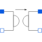

IdealGyratorIdeal gyrator |

|
This information is part of the Modelica Standard Library maintained by the Modelica Association.
A gyrator is an ideal two-port element defined by the following equations:
i1 = G * v2
i2 = -G * v1
where the constant G is called the gyration conductance.
| G |
Value: Type: Conductance (S) Description: Gyration conductance |
|---|
| p1 |
Type: PositivePin Description: Positive electrical pin of port 1 |
|
|---|---|---|
| n1 |
Type: NegativePin Description: Negative electrical pin of port 1 |
|
| p2 |
Type: PositivePin Description: Positive electrical pin of port 2 |
|
| n2 |
Type: NegativePin Description: Negative electrical pin of port 2 |